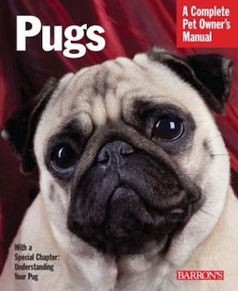
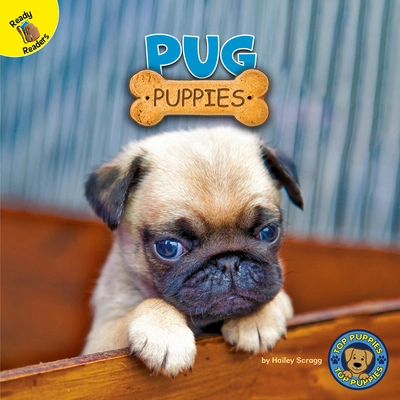
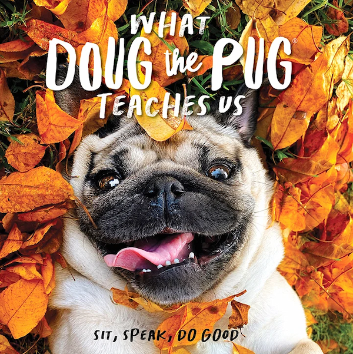
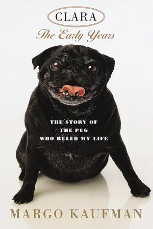
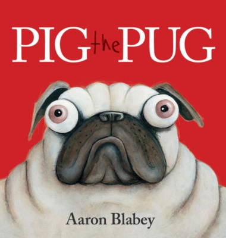
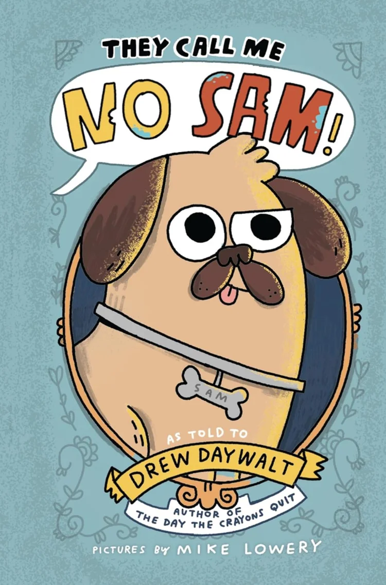

Q: What is it like to own a pug?
Training a Pug is work.
Everything about the purchase, care, nutrition, behavior, and training of your Pug.

Pugs will communicate with vocalizations and body language from an early age.
Readers age 2-5. Find out what Pug puppies look like and act like.

Pugs are loving, playful, and curious; eager for an adventure, but quickly loose stamina.
Famous viral Pug, Doug, shares messages of humor, love, and acceptance.

Pugs form strong emotional bonds with their human companions.
A humerous memoir by Margo Kaufman, who shares how her Pugs Clara and Sophie helped her through infertility and adoption.

Pugs rule the household.
Ages 0+. (Picture books are for everyone!) Pig, the Pug, is alternately selfish and friendly.

Pugs are known for their sometimes stubborn behavior.
Readers age 8-12. Humerous graphic novel details the story of Sam, insolent pug and incidental hero, who saves his family from thieves, and the brain-meting heat cannon.
